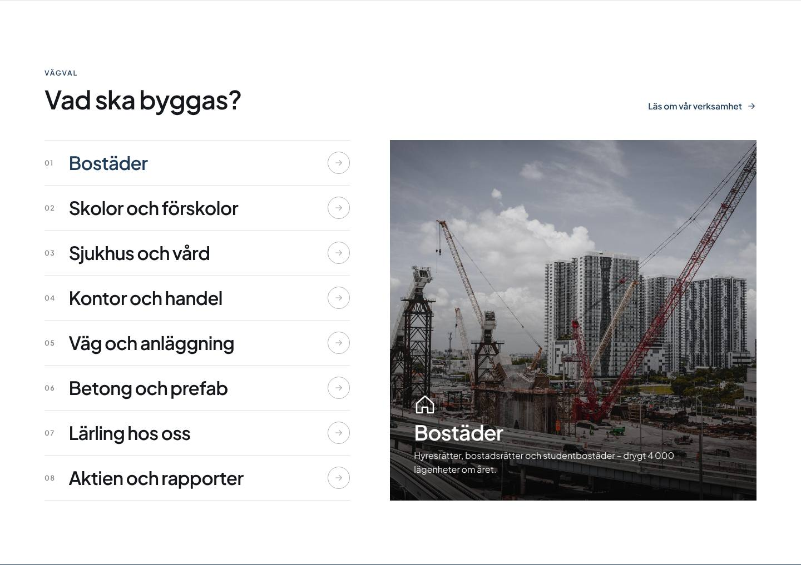
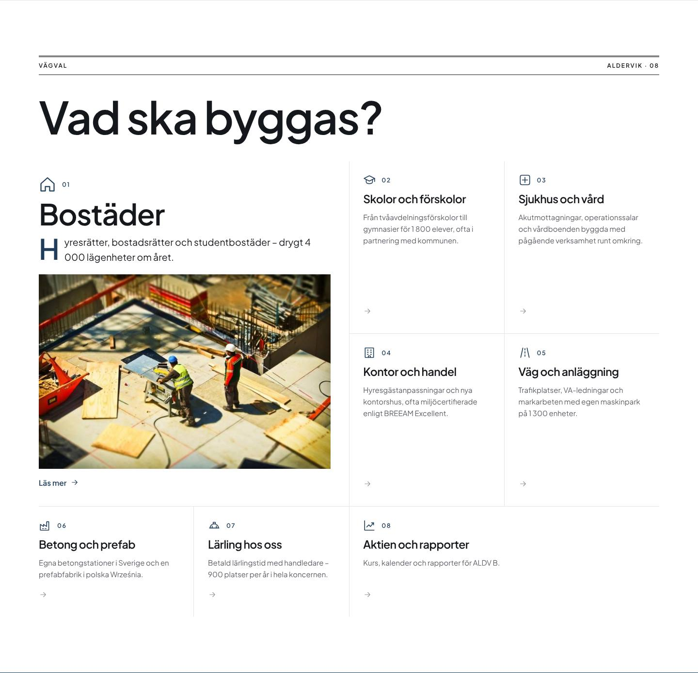
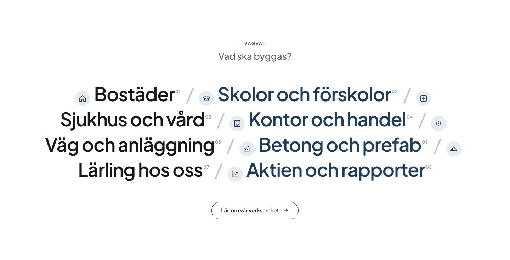
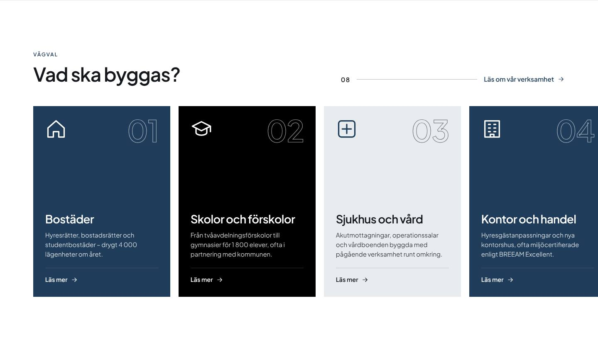
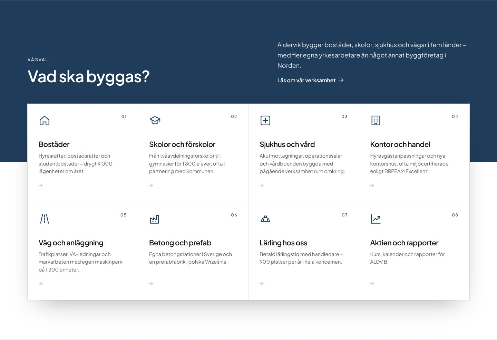
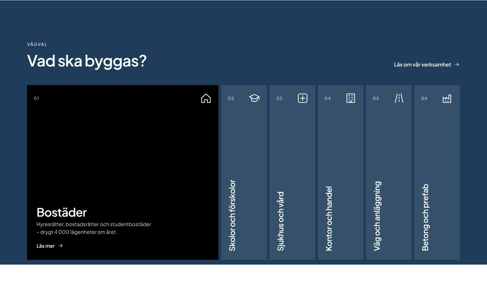

Vägval / tjänster 20 varianter
 rutor · vagval
rutor · vagval rader · vagval
rader · vagval chips · vagval
chips · vagval nummer · vagval
nummer · vagval cirklar · vagval
cirklar · vagval bildrutor · vagval
bildrutor · vagval lankar · vagval
lankar · vagval register · vagval
register · vagval expertis · vagval
expertis · vagval kakel · vagval
kakel · vagval rullband · vagval
rullband · vagval typo · vagval
typo · vagval kort · vagval
kort · vagval duo · vagval
duo · vagval
e-vitrin · vagval
e-tidning · vagval
e-mening · vagval
e-snapp · vagval
e-panel · vagval
e-lameller · vagval